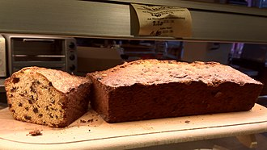
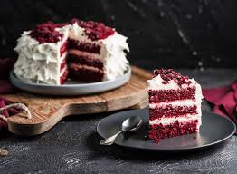
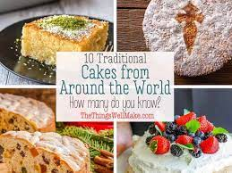
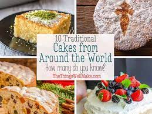
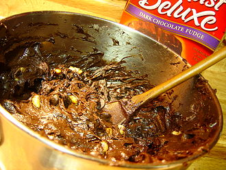
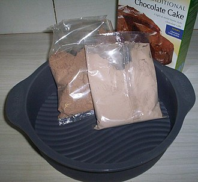
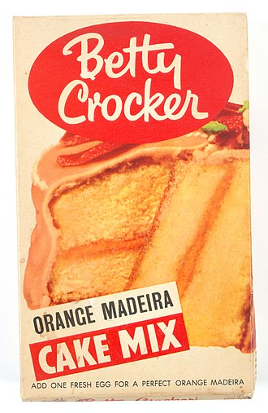

CAKE
Confection


.jpg)
.jpg)
Cake is a flour confection made from flour, sugar, and other ingredients, and is usually baked. In their oldest forms, cakes were modifications of bread, but cakes now cover a wide range of preparations that can be simple or elaborate, and which share features with desserts such as pastries, meringues, custards, and pies.
The most common ingredients include flour, sugar, eggs, fat (such as butter, oil or margarine), a liquid, and a leavening agent, such as baking soda or baking powder. Common additional ingredients include dried, candied, or fresh fruit, nuts, cocoa, and extracts such as vanilla, with numerous substitutions for the primary ingredients. Cakes can also be filled with fruit preserves, nuts or dessert sauces (like custard, jelly, cooked fruit, whipped cream or syrups),[1] iced with buttercream or other icings, and decorated with marzipan, piped borders, or candied fruit.
Cake is often served as a celebratory dish on ceremonial occasions, such as weddings, anniversaries, and birthdays. There are countless cake recipes; some are bread-like, some are rich and elaborate, and many are centuries old. Cake making is no longer a complicated procedure; while at one time considerable labor went into cake making (particularly the whisking of egg foams), baking equipment and directions have been simplified so that even the most amateur of cooks may bake a cake.
History
The term "cake" has a long history. The word itself is of Viking origin, from the Old Norse word "kaka".[2]
The ancient Greeks called cake πλακοῦς (plakous), which was derived from the word for "flat", πλακόεις (plakoeis). It was baked using flour mixed with eggs, milk, nuts, and honey. They also had a cake called "satura", which was a flat heavy cake. During the Roman period, the name for cake became "placenta" which was derived from the Greek term. A placenta was baked on a pastry base or inside a pastry case.[3]
.jpg) 

The Greeks invented beer as a leavener, frying fritters in olive oil, and cheesecakes using goat's milk.[4] In ancient Rome, the basic bread dough was sometimes enriched with butter, eggs, and honey, which produced a sweet and cake-like baked good.[5] Latin poet Ovid refers to his and his brother's birthday party and cake in his first book of exile, Tristia.[6]
Early cakes in England were also essentially bread: the most obvious differences between a "cake" and "bread" were the round, flat shape of the cakes, and the cooking method, which turned cakes over once while cooking, while bread was left upright throughout the baking process.[5]
Sponge cakes, leavened with beaten eggs, originated during the Renaissance, possibly in Spain.[7]
Cake Mixes
main article:Baking Mix
During the Great Depression, there was a surplus of molasses and the need to provide easily made food to millions of economically depressed people in the United States.[8] One company patented a cake-bread mix to deal with this economic situation, and thereby established the first line of cake in a box. In so doing, cake, as it is known today, became a mass-produced good rather than a home- or bakery-made specialty.
Later, during the post-war boom, other American companies (notably General Mills) developed this idea further, marketing cake mix on the principle of convenience, especially to housewives. When sales dropped heavily in the 1950s, marketers discovered that baking cakes, once a task at which housewives could exercise skill and creativity, had become dispiriting. This was a period in American ideological history when women, retired from the war-time labor force, were confined to the domestic sphere, while still exposed to the blossoming consumerism in the US.[9] This inspired psychologist Ernest Dichter to find a solution to the cake mix problem in the frosting.[10] Since making the cake was so simple, housewives and other in-home cake makers could expend their creative energy on cake decorating inspired by, among other things, photographs in magazines of elaborately decorated cakes.



Ever since cake in a box has become a staple of supermarkets and is complemented with frosting in a can.
CLICK BELOW TO KNOW MORE
ALL ABOUT CAKES
VARIETIES
MORE ABOUT IT